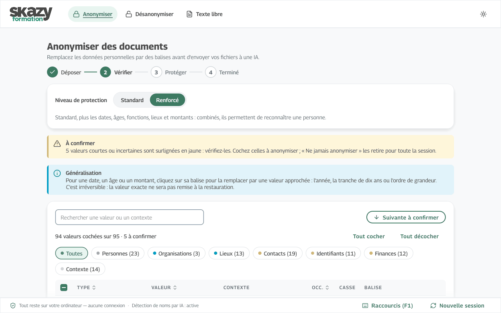
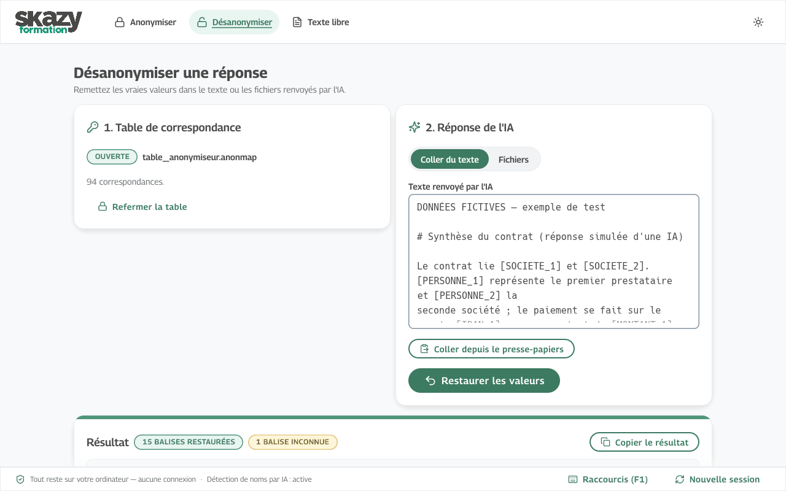
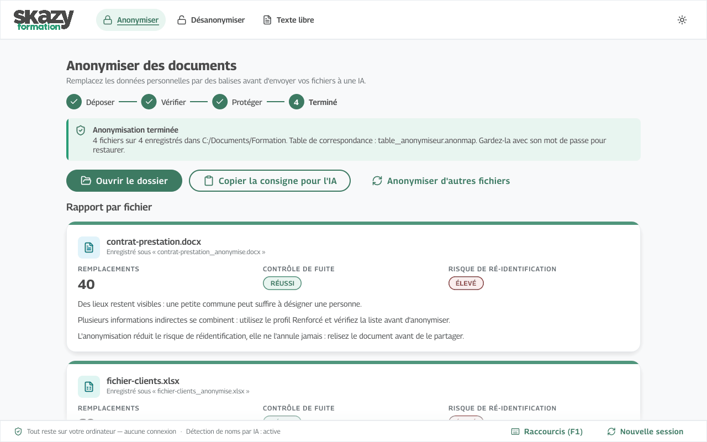

Anonymiseur
Masquez les noms, adresses, numéros et montants d'un document avant de l'envoyer à une IA, puis remettez les vraies valeurs dans sa réponse. Tout se passe sur votre ordinateur.
Pour Windows et macOS. Aucune installation, aucune connexion à Internet.

Le principe en trois étapes
Anonymiseur s'adresse aux apprenants et aux formateurs qui veulent se faire aider par une IA sur des documents contenant des données personnelles.
Anonymiser
Déposez votre fichier. L'application propose une liste de données à masquer ; vous la relisez, la corrigez et la validez. Elle produit un fichier anonymisé et une table de correspondance protégée par un mot de passe que vous choisissez.
Envoyer à l'IA
Donnez à l'IA le fichier anonymisé avec la consigne fournie par l'application. Elle demande à l'IA de conserver les balises telles quelles.
Désanonymiser
Collez la réponse de l'IA et ouvrez votre table avec son mot de passe : les balises redeviennent les vraies valeurs. Une balise légèrement abîmée par l'IA est reconnue ; une balise inconnue est signalée et laissée intacte.
Un exemple
Jean Dupont (jean.dupont@example.com) a signé le contrat avec Lagon Conseil.
[PERSONNE_1] ([EMAIL_1]) a signé le contrat avec [SOCIETE_1].
L'IA répond en réutilisant les balises ; Anonymiseur les remplace par les vraies valeurs. Les noms de cet exemple sont fictifs.

Ce qui est protégé
Données reconnues
Deux profils
- Standard : les identifiants directs (nom, email, téléphone, IBAN, etc.).
- Renforcé : le profil Standard, plus les informations indirectes qui peuvent désigner une personne par recoupement : dates, âges, fonctions, lieux, montants, matricules.
À la fin, un rapport de risque (Faible, Modéré, Élevé) vous conseille d'après ce qui reste visible.
Formats pris en charge
- Word (
.docx), Excel (.xlsx), PowerPoint (.pptx) - OpenDocument (
.odt,.ods,.odp) - PDF, y compris scanné (lu par reconnaissance de texte)
- Images (
.png,.jpg,.webpet autres) - Texte (
.txt,.md,.csv)
Google Docs, Sheets, Slides
Dans Google, choisissez Fichier, Télécharger, puis le format Microsoft Office ou OpenDocument, et déposez ce fichier dans l'application. Un raccourci .gdoc ou .gsheet ne contient pas le document.
Les anciens formats .doc, .xls, .ppt sont à réenregistrer au format moderne.
Confidentialité
Tout reste chez vous
- Vos documents ne quittent jamais votre ordinateur : l'application ne se connecte pas à Internet. L'IA de noms de l'édition complète est un modèle embarqué qui tourne localement.
- La table de correspondance est chiffrée par votre mot de passe (Argon2id, AES-256-GCM). Il n'est pas récupérable : personne, Skazy Formation comprise, ne peut ouvrir la table sans lui.
- Contrôle de fuite avant livraison : si une valeur validée subsiste dans le fichier produit, il n'est pas créé.
- Vous pouvez choisir le mode irréversible : aucune table n'est enregistrée.
Ce que l'outil ne garantit pas
- Ce n'est pas une anonymisation au sens du RGPD. C'est une pseudonymisation réversible : avec la table et le mot de passe, tout se retrouve, et un document peut rester identifiable par recoupement.
- Aucune détection n'est complète. Relisez toujours l'écran de validation : un nom rare ou une faute de frappe peuvent passer.
- La lecture des scans peut manquer du texte, surtout manuscrit : vérifiez à l'œil.
- Les balises protègent les données remplacées, pas le reste du contenu que vous envoyez à l'IA.
- L'application n'a pas encore été testée sur macOS, ni avec Microsoft Office lui-même.

Téléchargements
Complète : règles, dictionnaires et IA de noms (modèles embarqués) ; Lite : règles et dictionnaires seulement, plus petite, sans IA de noms. Les liens pointent toujours vers la dernière version publiée.
Windows (64 bits)
Édition complète
Anonymiseur.exe
Vérifier le fichier
Empreintes disponibles à la publication de la première version. Page des versions
Pour recalculer l'empreinte (PowerShell) :
Get-FileHash .\Anonymiseur.exe -Algorithm SHA256
ou, dans l'invite de commandes :
certutil -hashfile Anonymiseur.exe SHA256
Édition Lite
Anonymiseur-Lite.exe
Vérifier le fichier
Empreintes disponibles à la publication de la première version. Page des versions
Pour recalculer l'empreinte (PowerShell) :
Get-FileHash .\Anonymiseur-Lite.exe -Algorithm SHA256
ou, dans l'invite de commandes :
certutil -hashfile Anonymiseur-Lite.exe SHA256
macOS
Apple Silicon (M1 et suivants), édition complète
Anonymiseur-macos-arm64.zip
Vérifier le fichier
Empreintes disponibles à la publication de la première version. Page des versions
Pour recalculer l'empreinte (Terminal) :
shasum -a 256 Anonymiseur-macos-arm64.zip
Mac Intel, édition Lite (seule édition prévue pour Intel)
Anonymiseur-Lite-macos-x64.zip
Vérifier le fichier
Empreintes disponibles à la publication de la première version. Page des versions
Pour recalculer l'empreinte (Terminal) :
shasum -a 256 Anonymiseur-Lite-macos-x64.zip
Comparez l'empreinte de votre fichier à celle affichée ici : si elles diffèrent, ne l'ouvrez pas. Le lien VirusTotal ouvre le rapport d'analyse de ce fichier sur le site de VirusTotal.
Premier lancement
L'application n'est pas signée : votre système affichera un avertissement. C'est attendu, voici comment continuer.
Windows
- À l'avertissement SmartScreen, cliquez sur « Informations complémentaires », puis sur « Exécuter quand même ».
- Si Smart App Control bloque le fichier : clic droit sur le fichier, Propriétés, cochez « Débloquer », puis validez.
macOS 15 et suivants
- Ouvrez Réglages Système, puis Confidentialité et sécurité.
- Cliquez sur « Ouvrir quand même » à côté du message concernant l'application.